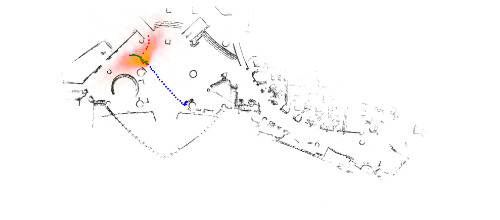
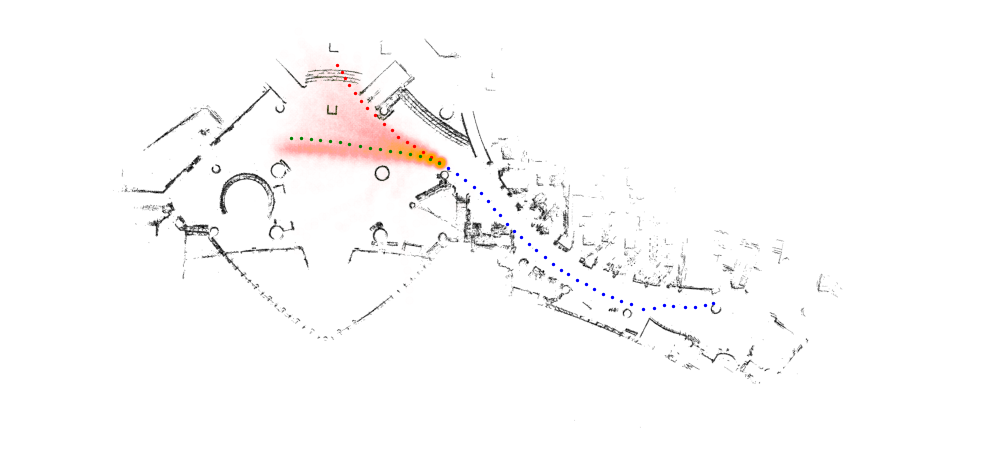

The notion of a quantile plays a central role in the one-dimensional setting. However, its extension to higher dimensions is nontrivial. Recent approaches propose constructing multivariate quantiles within an optimal transport framework. In this project, we explore a numerical approach to realizing such quantile functions using convex neural networks.